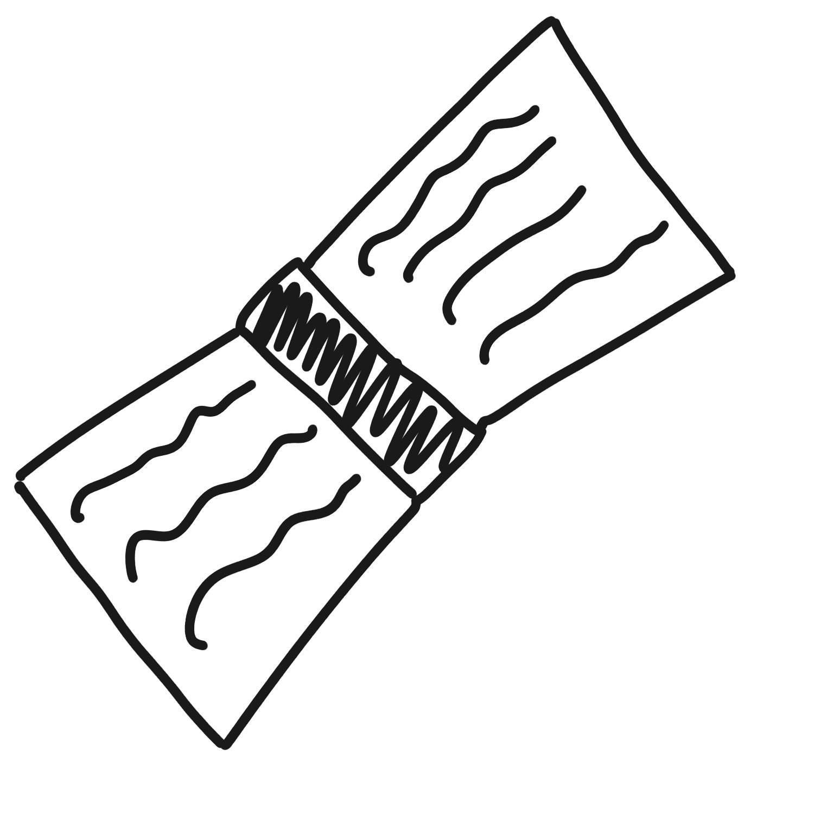

Exploring intersection of computational methods and social science.

Predictive analysis of state instability and journalist killings via post-colonial power proxies. Using 10 datasets to model how legacy colonial relationships continue to shape contemporary governance failure.
pythonnetwork analysisregressionpost-colonial theoryHow e-bikes, fat bikes, and other electrically powered mobility devices reshape urban infrastructure, regulation, and social equity in Dutch cities.
urban mobilitypolicyUvA x Brunel